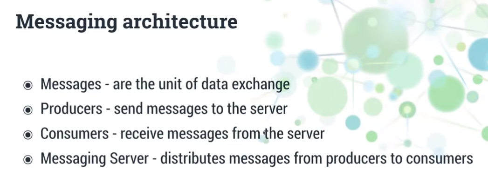
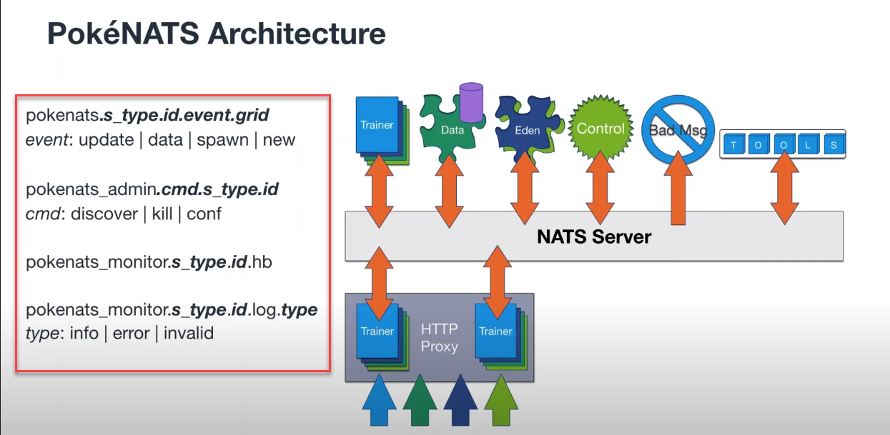

[NATS] Messaging architecture - 影片筆記
最近工作上碰到了 Messaging 架構面的開發，或許對很多人來說這已經是很基本的常識，但對我來說這是新東西，所以看個影片將裡面提到的觀念筆記下來
Messaging 架構

- message had payload and subject
- Subject names are extremely important (描述目標) -
- Producers - message 建立者 (publishers)
- Publisher may specify an optional reply, it change message type from notify to request
- Subscribe: receive messages matching a subscription
- can specify a queue group name
- can specify how many messages to receive before auto-canceling (big deal)
- can specify wildcards, ex:
pokenats.*.*.hb.100,pokenats.eden-services.>*matches any value in that element>matches all elements that follow, only valid at the end of subject
- NATS Server
- Clustered servers/cluster-aware clients
- Build-in resiliency and high availability
- Client will auto connect to another server in the cluster if one NATS server is down.
- Text-base protocol (payload is an array of bytes)
- use telnet to explore
- Monitorable on a dedicated port - returning JSON data to describing the state of the server
- Server protects itself first
- Auto-pruning of slow/non-responsive client
- Disconnect clients that send bad protocol messages
- at most once delivery
- messages stored until number or size limits are reached
- Subscribers can request messages sent earlier
- Start with first/last/n-th/etc message
- Durable subscriptions
- Resume previous session
- At least once delivery
- Clustered servers/cluster-aware clients
- Three simple patterns
- Publish-subscribe (基本行為)
- Queueing (變化型)
- Request-Reply (變化型)

利用 Subject Name 來區分事件所對應的行為，事件名稱很重要
實做練習
-
在 windows 電腦上要架設一個 NATS 服務，有 Docker 後一切都變簡單了
1
docker run -d --name nats-main -p 4222:4222 -p 6222:6222 -p 8222:8222 nats
-
如果沒有安裝過 NestJS CLI 的可以參考這篇文件，這裡我建立了兩個 NestJS App，一個是 Client, 一個是 Server
1
2nest new app-client
nest new app-server- 基本上，這邊命名為 client、server 沒什麼意義，因為在 Messaging 的世界裡，每一個都是 Client 或是 Server (因為都可以發訊息或接收訊息)
-
在兩個專案中都安裝以下套件
1
2npm i --save @nestjs/microservices
npm i --save nats@^1.4.12- 留意:
nats套件 1.x 和 2.x 版的 API 是不相容
- 留意:
-
設定 NATS Server 連線資訊
- main.ts
1
2
3
4
5
6
7
8
9
10
11
12
13
14
15
16
17
18
19
20import { NestFactory } from '@nestjs/core';
import { AppModule } from './app.module';
import { natsConfig } from './nats.config';
async function bootstrap() {
const app = await NestFactory.create(AppModule);
app.connectMicroservice(natsConfig);
const globalPrefix = 'api';
app.setGlobalPrefix(globalPrefix);
const port = process.env.port || 3333; // Port 可改
await app.startAllMicroservicesAsync();
await app.listen(port, () => {
console.log('Listening at http://localhost:' + port + '/' + globalPrefix);
});
}
bootstrap();- nats.config.ts
1
2
3
4
5
6
7
8import { NatsOptions, Transport } from '@nestjs/microservices';
export const natsConfig: NatsOptions = {
transport: Transport.NATS,
options: {
url: process.env.NATS_URL || 'nats://localhost:4222',
},
}; -
Client 設定
1
2
3
4
5
6
7
8
9
10
11
12
13
14
15
16
17
18import { Module } from '@nestjs/common';
import { ClientsModule } from '@nestjs/microservices';
import { AppController } from './app.controller';
import { AppService } from './app.service';
import { natsConfig } from './nats.config';
@Module({
imports: [
ClientsModule.register([{
name: 'MATH_SERVICE',
...natsConfig,
}])
],
controllers: [AppController],
providers: [AppService],
})
export class AppModule {}- Client 是用來發送訊息的，如果只是單純監聽事件，就不需要設定這個
client.emit([subject], [payload]): event-driven messagingclient.send([subject], [payload]): request-response messaging
- Client 是用來發送訊息的，如果只是單純監聽事件，就不需要設定這個
-
Controller 設定
- 發送端
1
2
3constructor(
('MATH_SERVICE') private client: ClientProxy,
) {}@Inject('MATH_SERVICE')對應AppModule所註冊的名稱，可自行更換
1
2
3sum(data: number[]): Observable<number> {
return this.client.send<number>({ cmd: 'sum' }, data);
}- 發送一個 Event ，Subject Name:
{cmd: 'sum'}，payload 是一個數字陣列
- 接收端
1
2
3
4
5({ cmd: 'sum' })
sum(data: number[]): number {
console.log('MinionAppController: sum', data);
return this.minionAppService.sum(data);
}- 使用
@MessagePattern([subject])決定要監聽的 Subject 種類